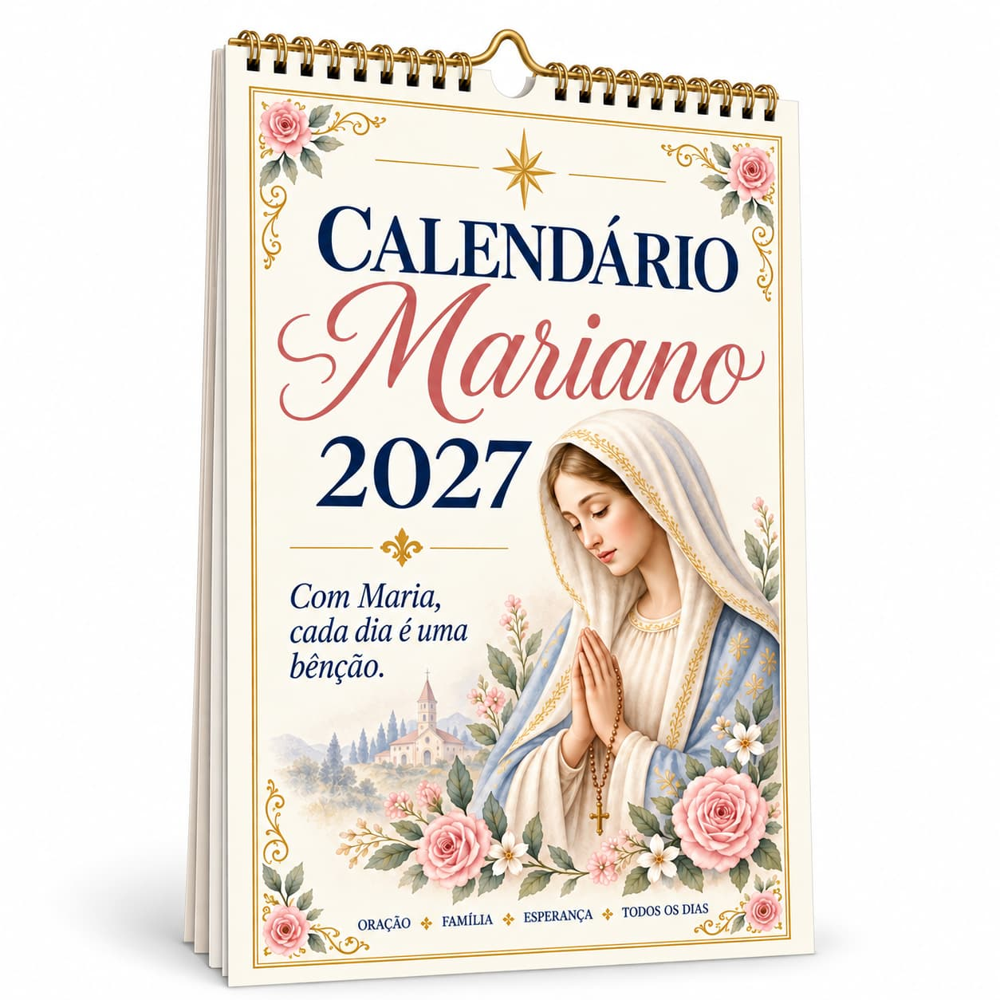

Calendário Mariano 2027
Com Maria, cada dia é uma bênção. Um calendário para acompanhar 2027 com inspiração mariana, oração, família e esperança.
O que você vai encontrar
Uma estrutura pensada para leitura simples, bonita e fácil de consultar pelo celular.
Organização anual
Um calendário digital para acompanhar o ano inteiro.
Identidade mariana
Visual delicado e inspirado na espiritualidade mariana.
Para o dia a dia
Uma presença de fé, esperança e devoção ao longo dos meses.
Veja por dentro
Uma visão do tipo de organização que você encontra ao longo do material.
Janeiro
Celebrações
Planejamento
Devoção
Para quem é
Leve Maria com você ao longo de 2027.
O e-book custa R$ 7,00. O botão de compra será ativado assim que o checkout estiver conectado.
Voltar ao catálogoPerguntas frequentes
É um produto físico?
Não. É um produto digital; não há envio pelos Correios.
Consigo acessar pelo celular?
Sim. O material foi pensado para leitura digital e pode ser acessado em dispositivos compatíveis com PDF.
Como recebo após a compra?
Após a confirmação do pagamento, siga as instruções da plataforma de venda para acessar o material.